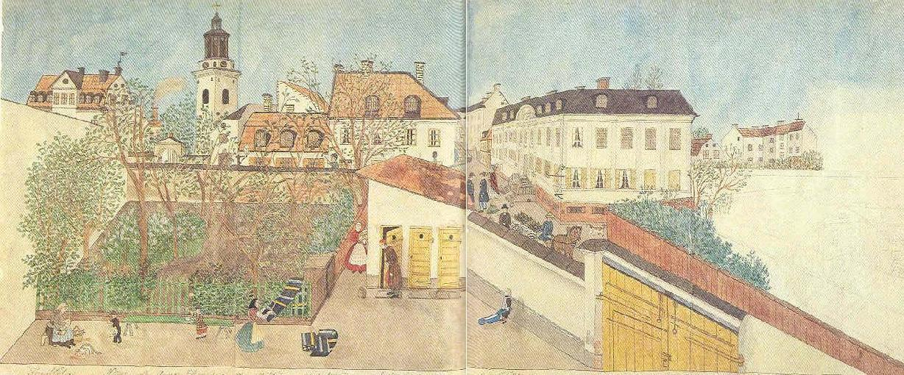

|
KRING MARIA KYRKA
Ofullbordad bild, av två hoplimmade blad. I bildens högra del har perspektivproblemen uppenbarligen blivit för stora. Två topografiska plan, ett undre och ett övre har glidit isär. Mittpartiet är brygghuset av sten; Utanför kommer Josabeth själv gående med ett fång ved i famnen. Sekreterare Lewin i nattrock och mössa är på väg från själva avträdet, alltmedan lille Carl Källbom i kolt drar sin ljusblå skottkärra. På det gröna staketet till vänster piskar mamsell Stål sina mörka trasmattor. Ännu längre till vänster är Fru Stål sysselsatt med att rensa fisk på en skärbräda över knäna. Huskatten är redan fullt upptagen med att sätta i sig renset. Lille Nisse Ekman bär ytterligare en katt till festen och hans syster blåser såpbubblor på en grön bänk. På Sankt Paulsgatan invid van der Nootska palatset utspelas ett rikt miljöliv med poliser, församlingsprästen och hans damsällskap, närnbergerbryggarens ölutkörare samt den välartade Sankt Bernhardshunden, känd från andra Josabeth-blad. Bakom brygghuset framskjuter de bägge skyltarna till hökarboden i hörnet Bellmansgatan; två borstar eller kanonviskor på långa skaft. Bakom angränsande mur driver en kusk på sin häst. |
"Ett stångmärke som levde länge var hökarborsten eller -kvasten som pekade snett uppåt från
kryddbodarnas ytterväggar. En borste fanns ännu kvar hos en specerist år 1939, där den inte satt i
vägen och följaktligen kunde trotsa ett förbud. Hundra år tidigare kunde större kvarter ha hela tre
tecken uppsatta för kryddkrämhandlaren eller hökaren. Det var han som förde sirap, vermiceller,
brevpapper, kanel, ättika, vadd, sviskon, lim, knappnålar, kakao, muskot, lampglas, även sockertoppar, som senare i form av runddriven plåt med vit färg hängdes på plats i den förbjudna
borstens ställe. Viskan på sin stång skulle ha varit ett privilegierat hederstecken för någon insats under kriget 1788-90, eller rentav från stormningen av Riga genom Gustav II Adolf. Det hör också till saken att kryddkrämarna brukade betjäna de pjäser som tillhörde borgerskapets fottrupper. Viskan är här givetvis att uppfatta som ett redskap med vilket man skötte en verksam kanon. Annars satt borsten eller kvasten över de medeltida värdshusen och kunde på detta område av segt vidmakthållna sinnebilder, även fortsättningsvis ha fått beteckna någon del av utskänkningen, om denna övertogs av hökaren. Det fanns fö många s k vinspecerister före Brattsystemets införande." (Ur Stadens skyltar 1976) |

|
I sina utsikter stannar mamsell Sjöberg gärna i
södra förstadens relativt slutna värld där medborgarnas liv
tycks utspelas inom kvarterets ram. Det intrycket får man i
varje fall av hennes utsikt från S:t Paulsgatan 20, som hon
fyllt med ett ovanligt rikt och tydligen starkt verklighetspräglat figurstaffage. I förgrunden ser man fastighetens murinhägnade gård vid hörnet av S:t Paulsgatan och Bellmansgatan, en genuin gammal södergård med sin gula uthuslänga och sin staketomgärdade trädgårdstäppa. Här försiggår vardagens alla bestyr. Mamsell själv i sin röda klänning har hämtat ett fång ved, fru Stål rensar fisk och kastar inälvorna åt kattorna, och hennes dotter piskar mattor över staketet. Barnen blåser såpbubblor och drar skottkärror, men fastighetsägaren själv, sekter B. U. Levin, "går på huset" i sin brunröda morgonrock. Det är osviklig realism.
|
Denna soliga sommardag är trafiken ute på S:t Paulsgatan redan i full gång. En ölutkörare från Nürnbergerbryggeriet kommer skramlande med sitt lass, ett par damer trippar fram under parasoll och en av dem konverseras av en
själasörjare från trakten, ett par poliser står och pratar, en
hund skäller. Och över gatans människor och fordon reser
sig två- och trevåningshusen med sina putsade fasader, sina
fritrappor, sina hänglyktor på hörnen och sina hökarborstar. Här är man mitt inne i Maria, här lyfter kyrkan sitt trygga torn över kyrkogårdens unga träd och murport, här ligger van der Nootska palatset, som på denna tid ännu kallades Holländska kyrkan efter en tillbyggnad för holländska reformerta församlingen, och här är det inte långt till Murbeckska stiftelsen för fattiga flickors undervisning, Maria lägre elementarläroverk och andra offentliga anstalter i denna fridfulla utkant, där Carl Michael Bellman fötts ett sekel tidigare. Miljön är inte mera förändrad än att han kunde ha känt sig hemmastadd med nästan varje byggnad på mamsell Sjöbergs bild. |